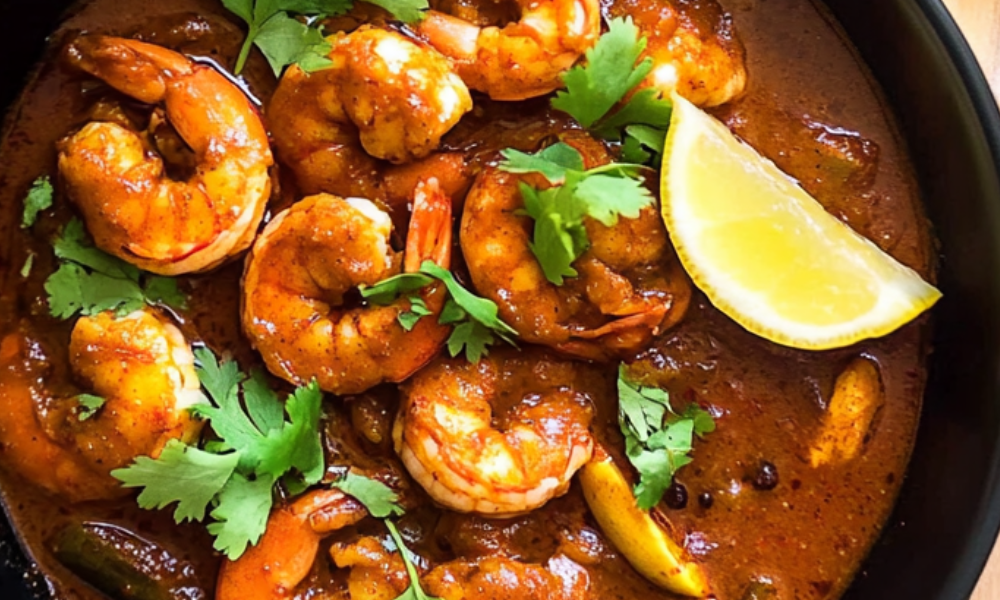

Prawn Curry

Prawn Curry Image
Ingredients
- 250g prawns (cleaned and deveined)
- 1 small onion (chopped)
- 2 cloves garlic (minced)
- 1 inch ginger (minced)
- 1 green chili (sliced)
- 1 tomato (chopped)
- 1 cup coconut milk
- 1 tsp curry powder
- 1/2 tsp chili powder
- 1/4 tsp turmeric powder
- 1 sprig curry leaves
- 2 tbsp oil
- Salt to taste
Instructions
- Heat oil in a pan over medium heat.
- Add chopped onions and cook until soft and slightly golden.
- Add garlic, ginger, and green chili. Sauté for about 1 minute.
- Add curry leaves and chopped tomato. Cook until the tomato becomes soft.
- Add curry powder, chili powder, turmeric powder, and salt. Mix well.
- Add the cleaned prawns and stir well with the spices.
- Cook for about 3–4 minutes until the prawns start to turn pink.
- Pour in the coconut milk and mix well.
- Let the curry simmer for about 5–7 minutes.
- Taste and adjust salt if needed.
- Serve hot with rice or bread.
Personal Notes